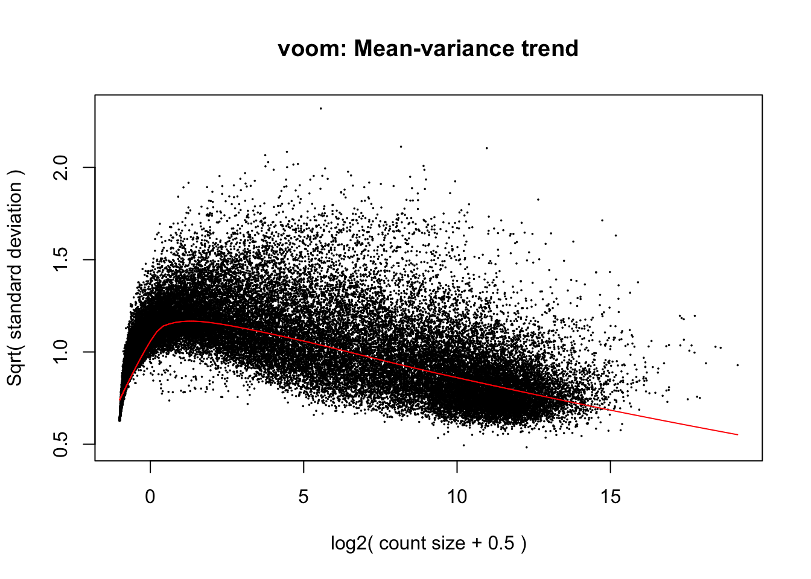
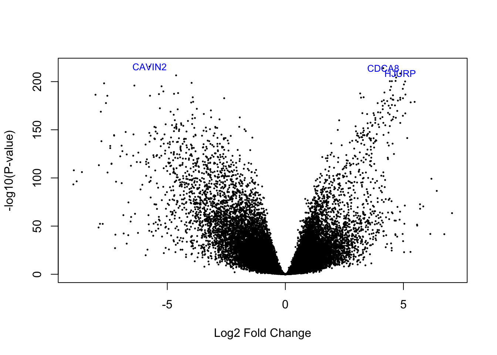
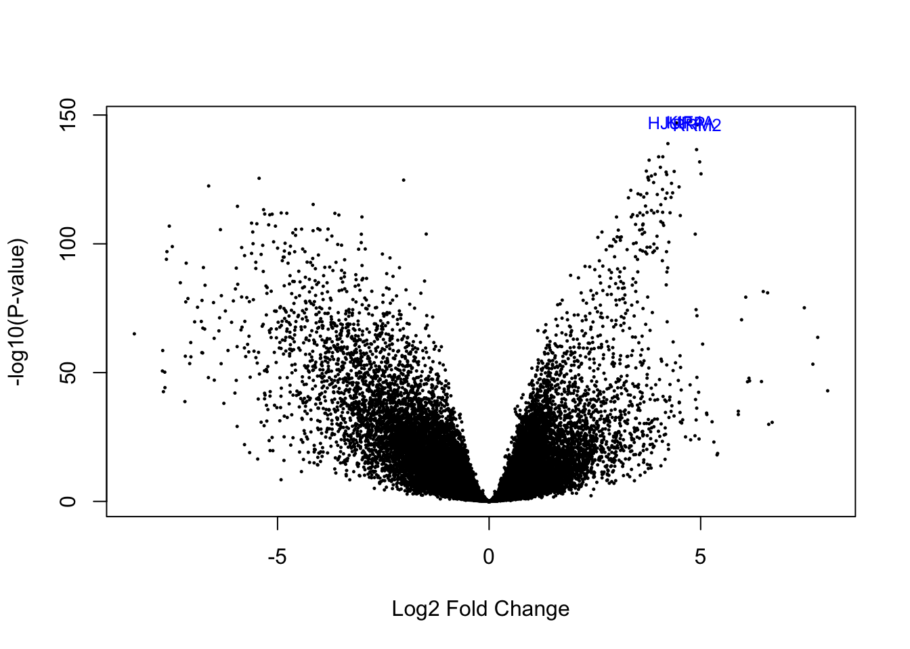
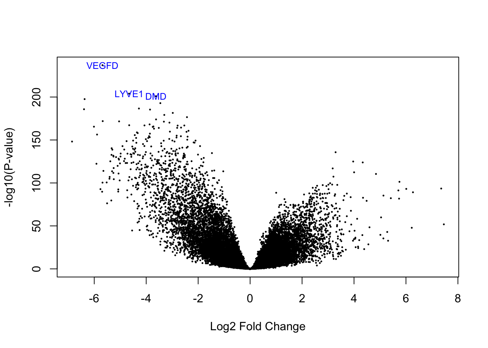
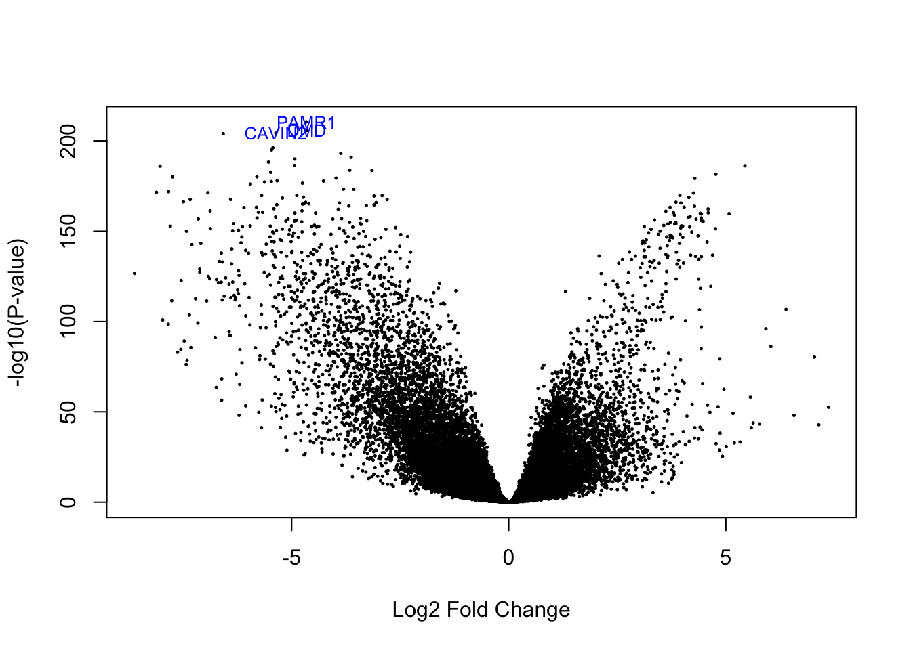

3 Differential expression analysis
Having defined our statistical model, we will proceed with the differential expression analysis, using the limma package. The voom function transforms count data to log2-counts per million. From this, the mean-variance relationship is used to compute observation level weights.
library("limma")
vGene <- voom(dge, mod, plot = TRUE)
Our next step is calculating different statistics, to evaluate which genes are differentially expressed in different circumstances. For this, we will use the eBayes function. Looking back at what each coefficient represents:
colnames(mod)## [1] "(Intercept)" "age" "subtypeBasal" "subtypeHer2" "subtypeLumA" "subtypeLumB" "tumor_stage"We will look at the genes differentially expressed with respect to coefficients 3 (Basal), 4 (Her2), 5 (LumA) and 6 (LumB), to look at the genes associated with the different subtypes. We can predict that these genes are among the ones used to distinguish the subtypes.
# Empirical Bayes Statistics for Differential Expression
eb_results <- eBayes(lmFit(vGene))3.1 Normal tissue
de_results_normal <- topTable(
eb_results,
coef = 1,
number = nrow(rse_BRCA),
sort.by = "none"
)
# Number of differentially expressed genes
table(de_results_normal$adj.P.Val < 0.05)##
## FALSE TRUE
## 1865 62972When compared to cancer, most genes are differentially expressed.
3.2 Basal subtype
de_results_basal <- topTable(
eb_results,
coef = 3,
number = nrow(rse_BRCA),
sort.by = "none"
)
# Number of differentially expressed genes
table(de_results_basal$adj.P.Val < 0.05)##
## FALSE TRUE
## 22277 4256065% of genes are differentially expressed.
# Visualizing as volcano plot
volcanoplot(eb_results, coef = 3, highlight = 3, names = de_results_basal$gene_name)
# Highlighted genes
de_results_basal$gene_name[rank(de_results_basal$adj.P.Val) < 4]## [1] "CDCA8" "CAVIN2" "HJURP"3.3 Her2 subtype
de_results_her2 <- topTable(
eb_results,
coef = 4,
number = nrow(rse_BRCA),
sort.by = "none"
)
# Number of differentially expressed genes
table(de_results_her2$adj.P.Val < 0.05)##
## FALSE TRUE
## 25519 3931860% of genes are differentially expressed.
# Visualizing as volcano plot
volcanoplot(eb_results, coef = 4, highlight = 3, names = de_results_her2$gene_name)
# Highlighted genes
de_results_her2$gene_name[rank(de_results_her2$adj.P.Val) < 4]## [1] "RRM2" "HJURP" "KIF4A"3.4 LumA subtype
de_results_luma <- topTable(
eb_results,
coef = 5,
number = nrow(rse_BRCA),
sort.by = "none"
)
# Number of differentially expressed genes
table(de_results_luma$adj.P.Val < 0.05)##
## FALSE TRUE
## 34262 3057547% of genes are differentially expressed.
# Visualizing as volcano plot
volcanoplot(eb_results, coef = 5, highlight = 3, names = de_results_luma$gene_name)
# Highlighted genes
de_results_luma$gene_name[rank(de_results_luma$adj.P.Val) < 4]## [1] "LYVE1" "VEGFD" "DMD"3.5 LumB subtype
de_results_lumb <- topTable(
eb_results,
coef = 6,
number = nrow(rse_BRCA),
sort.by = "none"
)
# Number of differentially expressed genes
table(de_results_lumb$adj.P.Val < 0.05)##
## FALSE TRUE
## 23569 4126863% of genes are differentially expressed.
# Visualizing as volcano plot
volcanoplot(eb_results, coef = 6, highlight = 3, names = de_results_lumb$gene_name)
# Highlighted genes
de_results_lumb$gene_name[rank(de_results_lumb$adj.P.Val) < 4]## [1] "PAMR1" "CAVIN2" "DMD"